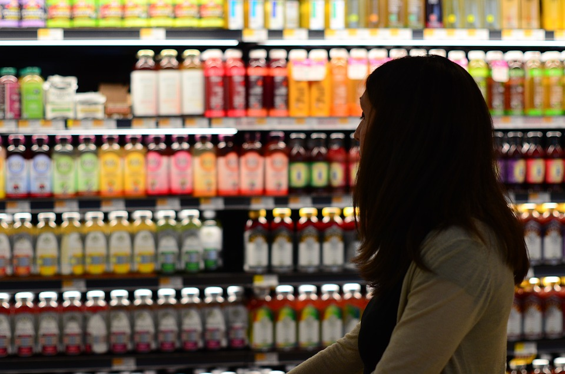

1 / 3

Shop wisely for certain foods.
2 / 3
Air planes cause a lot of air polution.
3 / 3

Certain clothing brands are more environmentally friendly than others.
How a person eats, travels, shops impacts the air and environment. Everyday choices can make all the difference when attempting to protect our environment. There are various way you can help reduce your negative impact on the environment. Browse this site to learn about practical ways that you can help at home, volunteering opportunities as well as organizations to donate.